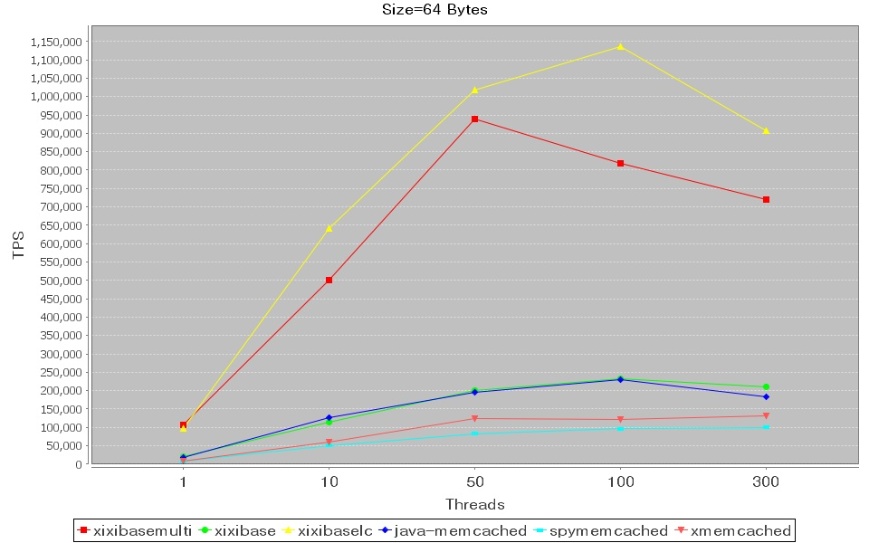
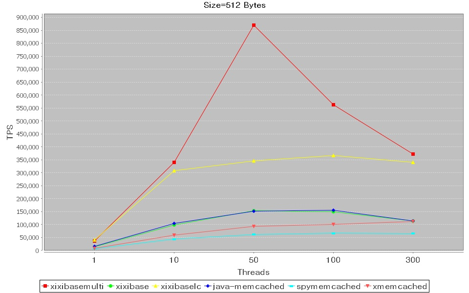
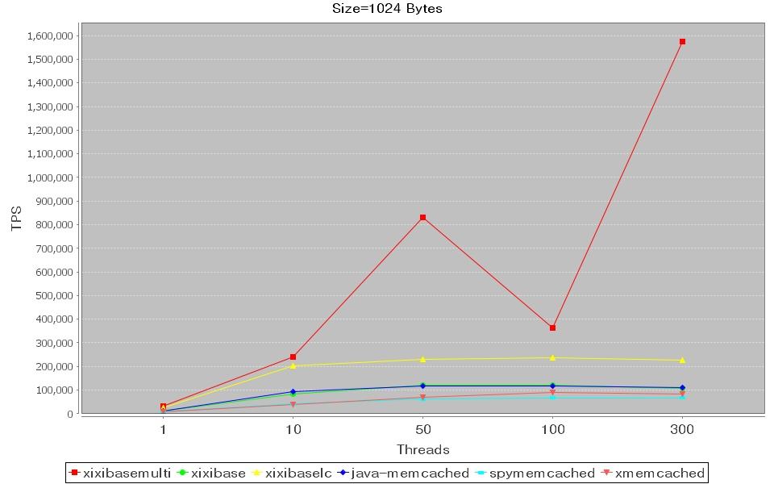
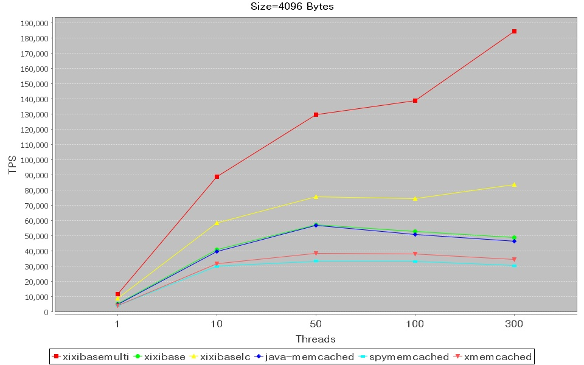
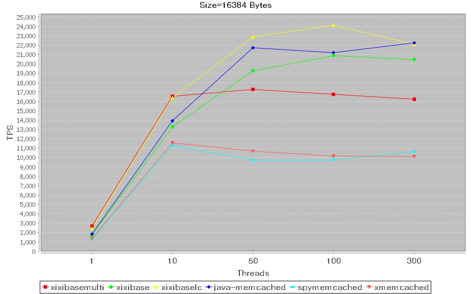
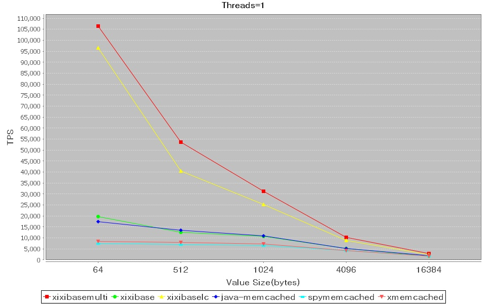
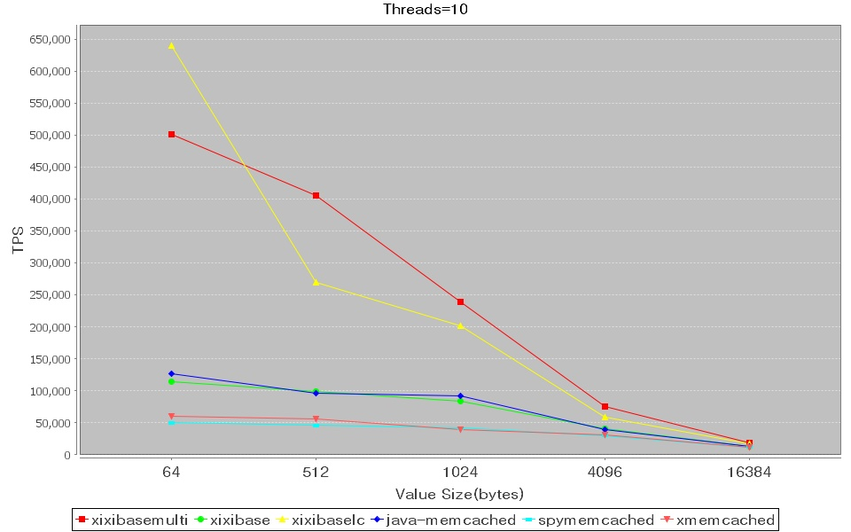
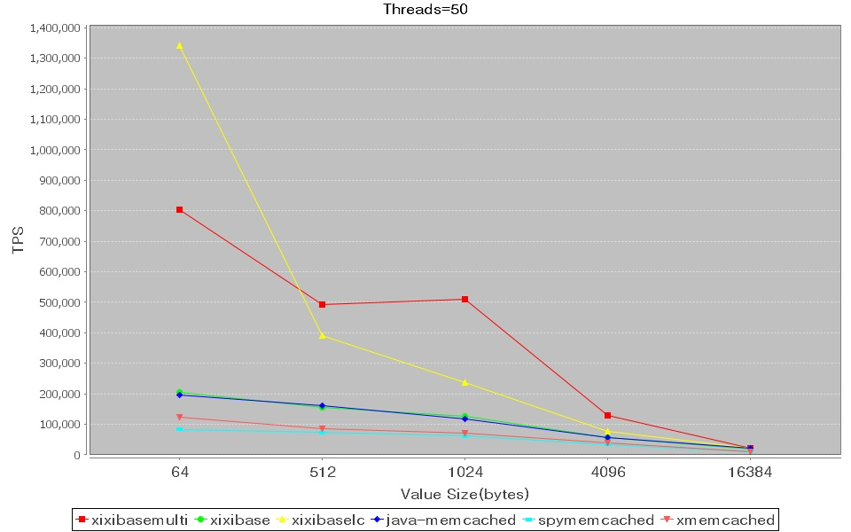
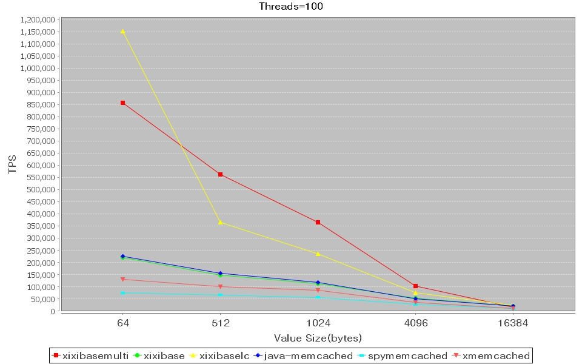
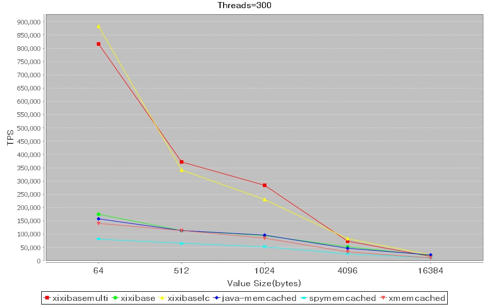

Performance Comparison
This original benchmark is writed by dennis zhuang(killme2008@gmail.com).
Details please refer
URL:
http://xmemcached.googlecode.com/svn/trunk/benchmark/benchmark.html
I add Xixibase case in it. Xixibase URL:
http://code.google.com/p/xixibase/
Source code
You need get follow source and merge it in one project.
svn co http://xmemcached.googlecode.com/svn/trunk/benchmark/
svn co http://xixibase.googlecode.com/svn/trunk/benchmark/
Server and client
The server and client all run on same linux
machine.
A client connect to one server, then start numbers of threads which use only one client instance to repeat themself to
store and retrive data from the server
concurrently,write 10% and read 90%, BASE_REPEATS = 2000.
Test Environment
Software
- Memcached Server
- Version is 1.4.5,default install configuration.
- Start with option "-m 16000"
- Xixibase Server
- Version is 0.1,default install configuration.
- Start with option "-m 16000"
- Java Client
- JVM Version: Sun JDK 1.6.0_27
- All clients use memcached text protocol.
- xmemcached 1.2.6.1,default configuration
- Spymemcached 2.5,default configuration
- Memcached-Java-Client 2.5.1,SockIOPool set minConn to 10 and maxConn to 500,Max idle time set to one hour,also set compress threshold to 16K.
- Xixibase-Java-Client 0.1 normal and multi case, default configuration
- Xixibase-Java-Client 0.1 enable LocalCache, setMaxCacheSize(1024 * 1024 * 1024)
- JVM args: -server -Xms1024m -Xmx2048m -XX:NewSize=256m -XX:MaxNewSize=256m -XX:PermSize=64m -XX:MaxPermSize=64m
- Xmemcached and Spymemcached is nio based.So they have to set
operation timeout,both are set to five seconds.
Hardware
- Server and client all run in one machine
- CPU: 4 x Intel(R) Xeon(R) CPU E5530 @ 2.40GHz
- O/S: CentOS 5.3 64bit
- RAM: 16 GiB
Part1 Compared by threads number





Part2 Compared by value size




